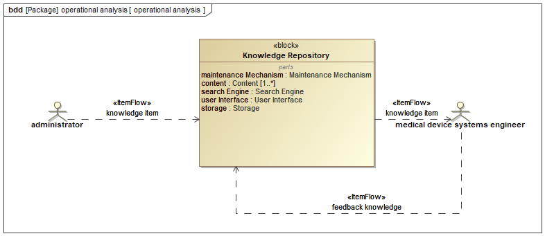
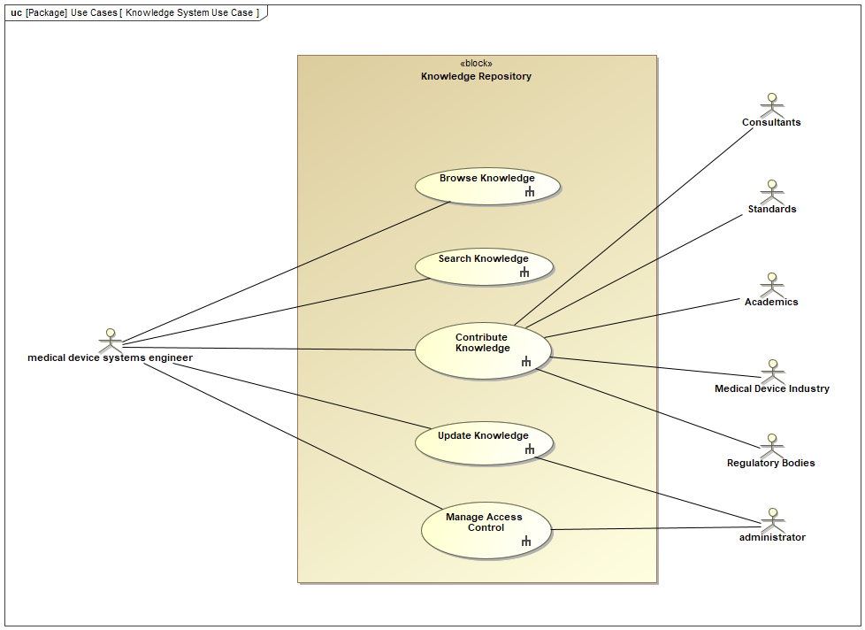
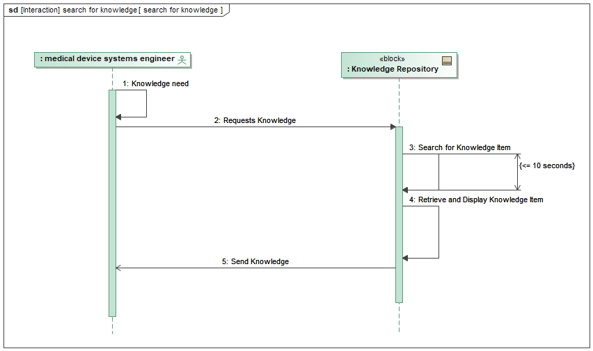
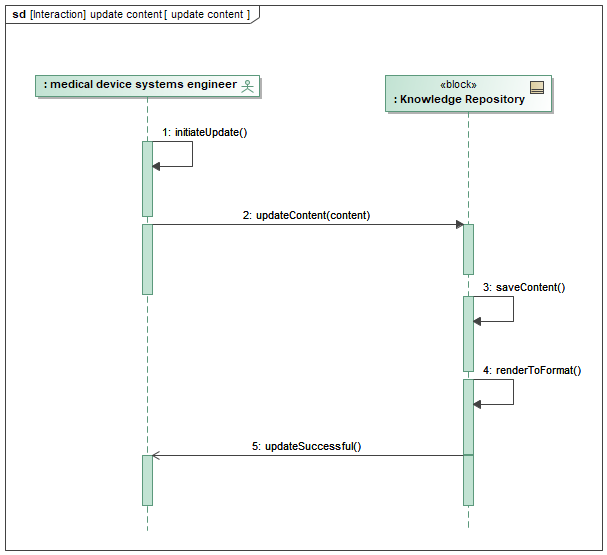

4 Operational Analysis
4.1 System Context

This section defines the system context for the knowledge repository. The analysis employs a SysML block definition diagram. The diagram depicts a system centered around a knowledge repository containing information relevant to medical services.
4.1.1 Central Block: Knowledge Repository
The core element of the system is the Knowledge Repository block. This block represents a database or information storage system that houses the medical device systems engineering knowledge base. The knowledge base is comprised of multiple Content elements, indicated by the notation “[1..*]”. This multiplicity signifies that the repository must contain at least one content element, and the number of content elements can be limitless. The content would likely encompasses details about regulatory, risk management, requirements management, and other relevant medical device systems engineering information.
The knowledge repository also includes a Search Engine component. This component plays a critical role in facilitating efficient retrieval of information from the content base. Users can leverage the search engine to locate specific knowledge items based on their needs.
The knowledge repository possesses two key properties:
Maintenance Mechanism: This property acknowledges the importance of maintaining the accuracy and completeness of the knowledge base over time. The specific mechanisms for maintenance are not explicitly shown in the diagram but could involve processes for adding, updating, and removing content.
Storage: This property refers to the physical infrastructure responsible for storing the knowledge repository. While the specific technology is not depicted, it likely involves a database server, physical medium or cloud-based storage solution.
Interaction and Data Flow
The diagram depicts two key data flows associated with the knowledge repository:
User Interface: This bidirectional flow signifies the interaction between users and the knowledge repository. Users can provide input, such as search queries, through the user interface. The system, in turn, can deliver output, such as search results or retrieved information, through the same channel.
Knowledge Item: This flow represents the movement of knowledge items between the knowledge repository and potentially other parts of the system or external actors. Knowledge items could be retrieved from the repository by authorized users or potentially transferred to other system components for further processing.
4.1.2 Actors and System Stakeholders
The diagram identifies two primary actors that interact with the system:
Administrator: This actor plays a crucial role in managing the knowledge repository. Their responsibilities likely include adding, updating, and deleting content within the repository. Additionally, the administrator is responsible for managing access control, ensuring that only authorized users can access and modify the knowledge base.
Medical Device Systems Engineer and Consultant: These actors represent the primary consumers of information within the knowledge repository. They can leverage the search engine functionality to locate relevant knowledge items pertinent to their work in medical device development or consultation.
The SysML block definition diagram portrays a knowledge repository for medical device systems engineering. The repository stores and manages essential information related to medical device systems engineering. Authorized users, such as systems engineers and consultants, can access and search the repository using a search engine. An administrator maintains the knowledge base and ensures its integrity through appropriate maintenance mechanisms. This system architecture facilitates knowledge sharing and access within the medical service domain. Further analysis could explore the internal structure of the knowledge repository, including the specific data model used to represent medical service information, to gain a deeper understanding of the system’s knowledge representation and retrieval capabilities.
4.2 System Capabilities
This section analyzes the knowledge repository system capabilities and modeled with a SysML use case diagram. The diagram depicts a central block representing the knowledge repository itself, surrounded by actors and their associated use cases.
4.2.1 Actors and their Roles
Medical Device Systems Engineer: This primary actor interacts with the system for browsing, searching, contributing, and updating knowledge relevant to medical device engineering.
Consultants: Similar to systems engineers, consultants utilize the system for various knowledge management tasks.
Standards Bodies: This actor leverages the repository to access and potentially contribute knowledge related to medical device standards.
Academics: This actor participates by searching for and potentially contributing knowledge that furthers the academic understanding of medical devices.
Regulatory Bodies: Regulatory bodies interact with the system to access relevant knowledge for their oversight functions within the medical device industry.
Administrator: This privileged actor plays a crucial role in managing access control, determining what information different actor types can view and update within the repository.
Use Cases and System Functionality:
Browse Knowledge: This use case allows actors to explore the knowledge repository freely, potentially leading to serendipitous discovery of relevant information.
Search Knowledge: This use case facilitates targeted knowledge retrieval through a search mechanism within the repository.
Contribute Knowledge: This use case empowers qualified actors, such as engineers and consultants, to enrich the repository by adding new knowledge.
Update Knowledge: This use case enables actors to maintain the accuracy and relevance of the repository by allowing them to update existing information.
Manage Access Control (Administrator): This restricted use case allows administrators to define and enforce access permissions, ensuring the integrity and security of the knowledge base.

4.2.2 Collaboration and Knowledge Sharing
The presence of diverse actors and their associated use cases highlights the collaborative nature of the knowledge repository system. The system fosters knowledge sharing within the medical device industry, allowing engineers, consultants, and regulatory bodies to access and contribute valuable information. Academics and standards bodies can also benefit by leveraging the repository for research and standard development purposes.
The SysML use case diagram demonstrates a well-defined knowledge repository system designed to facilitate knowledge sharing and management within the medical device industry. The diverse set of actors and their associated use cases emphasize the system’s potential to serve a wide range of stakeholders. Future analysis could explore the system’s internal structure, including its knowledge representation and retrieval mechanisms, to provide a more comprehensive understanding of its functionality.
4.3 System Sequences
4.3.1 Main System Function Sequence
This section analyzes a SysML sequence diagram representing the interaction between a medical device systems engineer and a knowledge repository system. The diagram depicts a knowledge retrieval process crucial for informed decision-making within the medical device development domain.

Actors and Interactions:
The sequence diagram focuses on two primary actors:
Medical Device Systems Engineer: This actor represents the user of the system, an engineer seeking knowledge pertinent to medical device design or development.
Knowledge Repository: This block represents the system component housing the relevant knowledge base for medical devices.
The interaction commences with the activation of the Medical Device Systems Engineer. This signifies the engineer encountering a knowledge need, prompting them to initiate a search within the knowledge repository. The engineer transmits a request to the knowledge repository, likely specifying the desired knowledge domain or specific keywords related to their need.
Knowledge Retrieval Process:
Upon receiving the request, the knowledge repository executes a Search for Knowledge Item operation. This operation signifies the system’s internal process of identifying relevant knowledge within its storage. The diagram incorporates a time constraint, indicating that the search should be completed within 10 seconds or less. This emphasizes the system’s prioritization of search efficiency, ensuring timely knowledge retrieval for the engineer.
Following a successful search, the knowledge repository retrieves the identified knowledge item. This retrieved item could encompass various formats such as technical references, design guidelines, or regulatory guidelines relevant to medical devices. Finally, the knowledge repository transmits the retrieved knowledge item back to the engineer, enabling them to analyze the information and utilize it to address their specific knowledge need.
Significance for Medical Device Development:
This SysML sequence diagram offers a simplified yet insightful representation of a critical interaction within the medical device development process. Efficient access to relevant knowledge empowers engineers to make informed decisions concerning design, development, and regulatory compliance. The time constraint on the search operation underscores the importance of a well-structured and indexed knowledge repository, facilitating rapid retrieval of necessary information.
Further Considerations:
While this diagram provides a foundational understanding of the knowledge search process, further exploration could involve:
Investigating alternative interaction scenarios, such as browsing by category or utilizing advanced search functionalities.
Analyzing potential error conditions during the search process and the system’s response mechanisms.
Considering the knowledge repository’s internal structure and indexing methods for efficient retrieval.
By delving deeper into these aspects, a more comprehensive understanding of the knowledge retrieval system and its impact on informed decision-making within the medical device development domain can be achieved.
4.3.2 Update Content Sequence
This following sequence diagram demonstrates a simplified content update process within the knowledge repository system. It highlights the interaction between the engineer and the knowledge repository, but doesn’t show details like content format validation or error handling.

The image depicts a SysML sequence diagram for updating content in the knowledge repository system. The diagram showcases the interaction between a medical device systems engineer and the knowledge repository.
Here’s a breakdown of the interaction sequence:
The
medical device systems engineerinitiates the update process by calling theinitiateUpdate()function.The
knowledge repositoryreceives theinitiateUpdate()call and responds with theupdateContent(content)function, prompting the engineer to provide the new content.The engineer provides the content through the
updateContent(content)function call.The
knowledge repositorythen performs thesaveContent()function to store the updated content.After successful update, the
knowledge repositorysends a confirmation message through theupdateSuccessful()function.